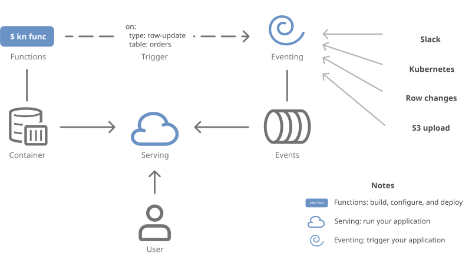
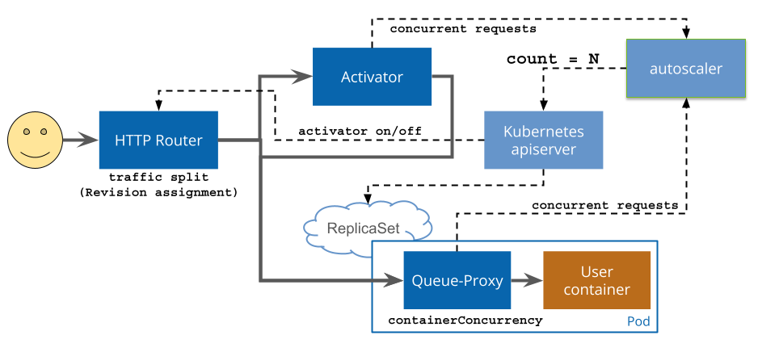

Knative Technical Overview¶
This comprehensive overview explains what Knative is, what problems it solves, and how its components work together. Whether you're evaluating Knative for your use case or need background information to understand the rest of the documentation, this section provides the conceptual foundation you need.
What is Knative?¶
Knative is a Kubernetes-based platform that provides a complete set of middleware components for building, deploying, and managing modern serverless workloads. Knative extends Kubernetes to provide higher-level abstractions that simplify the development and operation of cloud-native applications.
Problems Knative Solves¶
Knative addresses several key challenges in modern application development and deployment:
Application Deployment Complexity: Traditional Kubernetes requires deep knowledge of pods, services, deployments, and ingress resources. These constructs provide a lot of flexibility and complexity that most applications don't need. Knative provides simpler abstractions that handle these details automatically.
Serverless Operations: Manual scaling, cold starts, and traffic routing are complex to implement. Knative provides automatic scaling from zero to thousands of instances, intelligent traffic routing, and efficient resource utilization.
Event-Driven Architecture: Building reliable event-driven systems requires complex infrastructure for event ingestion, routing, and delivery. Building event routing and delivery into your application limits your choice of event delivery and architecture; Knative provides standardized event processing capabilities across multiple event implementations using CloudEvents for delivery and Kubernetes for configuration.
Developer Experience: Moving from code to running applications involves multiple steps and tools. Knative Functions provide a streamlined and standardized developer experience for building and deploying stateless functions as standard containers. Build and test locally without Kubernetes, and avoid managing build details like Dockerfiles and Kubernetes resources until you need them.
Platform Lock-in: Cloud-specific serverless solutions create vendor lock-in. Knative runs on any Kubernetes cluster, providing portability across cloud providers and on-premises environments.
Background Knowledge¶
While you didn't need any specific programming experience to get started with Knative, you'll pick up the following concepts along the way. Knative will manage a lot of these in the background, so you can dive in deep when you're ready to learn.
- Basic Kubernetes knowledge: Understanding of pods, services, and deployments
- Container concepts: How to build and manage container images
- HTTP/REST APIs: Understanding of web service fundamentals
- Basic YAML: Ability to read and write Kubernetes resource definitions
For event-driven features, familiarity with: - Event-driven patterns: Basic understanding of producers, consumers, and message routing - CloudEvents specification: Helpful but not required (Knative handles the details)
Architecture Overview¶
Knative consists of three main components that work together to provide a complete serverless platform:

Knative Serving: An HTTP-triggered autoscaling container runtime that manages the complete lifecycle of stateless HTTP services, including deployment, routing, and automatic scaling.
Knative Eventing: A CloudEvents-over-HTTP asynchronous routing layer that provides infrastructure for consuming and producing events, enabling loose coupling between event producers and consumers.
Knative Functions: A developer-focused function framework that leverages Serving and Eventing components to provide a simplified experience for building and deploying stateless functions.
These components can be used independently or together, allowing you to adopt Knative incrementally based on your needs.
Knative Serving¶
Knative Serving defines a set of objects as Kubernetes Custom Resource Definitions (CRDs). These resources are used to define and control how your serverless workload behaves on the cluster.

The primary Knative Serving resources are Services, Routes, Configurations, and Revisions:
-
Services: The
service.serving.knative.devresource automatically manages the whole lifecycle of your workload. It controls the creation of other objects to ensure that your app has a route, a configuration, and a new revision for each update of the service. Service can be defined to always route traffic to the latest revision or to a pinned revision. -
Routes: The
route.serving.knative.devresource maps a network endpoint to one or more revisions. You can manage the traffic in several ways, including fractional traffic and named routes. -
Configurations: The
configuration.serving.knative.devresource maintains the desired state for your deployment. It provides a clean separation between code and configuration and follows the Twelve-Factor App methodology. Modifying a configuration creates a new revision. -
Revisions: The
revision.serving.knative.devresource is a point-in-time snapshot of the code and configuration for each modification made to the workload. Revisions are immutable objects and can be retained for as long as useful. Knative Serving Revisions can be automatically scaled up and down according to incoming traffic.
For more information on the resources and their interactions, see the Resource Types Overview in the serving Github repository.
Key Serving Features¶
Automatic Scaling: Services automatically scale from zero to handle incoming traffic and scale back down when idle, optimizing resource usage and costs.
Traffic Management: Built-in support for blue-green deployments, canary releases, and traffic splitting between different revisions of your application.
Networking: Automatic ingress configuration with support for custom domains, TLS termination, and integration with service mesh technologies.
Kubernetes Native: Knative builds on the Kubernetes Pod abstraction, making it easy to access functionality like service accounts, accelerator access, and container sandboxing.
Configuration Management: Clean separation between application code and configuration, following twelve-factor app principles.
Request Flow in Serving¶

When a request is made to a Knative Service:
- Ingress Layer: The request enters through the configured networking layer (Kourier, Istio, or Contour)
- Routing Decision: Based on current traffic patterns and scaling state, requests are routed either to the Activator or directly to application pods
- Scaling: If no pods are running (scale-to-zero), the Activator queues the request and signals the Autoscaler to create pods
- Queue-Proxy: All requests pass through the Queue-Proxy sidecar, which enforces concurrency limits and collects metrics
- Application: The request reaches your application container
For detailed information, see the request flow documentation.
GPU Resources and LLM Inference¶
Knative Serving can leverage Kubernetes pod capabilities to access specialized hardware resources like GPUs, making it an excellent platform for AI/ML inference workloads:
GPU Resource Access: Since Knative Services are implemented as Kubernetes pods, you can request GPU resources using standard Kubernetes resource specifications. This enables running inference models that require GPU acceleration while benefiting from Knative's automatic scaling and traffic management.
LLM Inference Support: Knative Serving provides an ideal foundation for Large Language Model (LLM) inference services, offering:
- Automatic scaling from zero to multiple GPU-enabled pods based on request demand
- Traffic splitting for A/B testing different model versions or configurations
- Resource efficiency by scaling down expensive GPU resources when not in use
- Standard HTTP interfaces for model serving and inference endpoints
KServe Integration: For production LLM deployments, consider using KServe, a Kubernetes-native model serving platform built on Knative Serving. KServe provides:
- Standardized inference protocols and multi-framework support
- Advanced features like model ensembling, explainability, and drift detection
- Optimized serving runtimes for popular ML frameworks (TensorFlow, PyTorch, ONNX, etc.)
- Built-in support for autoscaling GPU workloads and batching requests
Whether using Knative Serving directly for custom inference services or through KServe for standardized model serving, you get the benefits of Kubernetes-native resource management combined with serverless operational characteristics.
Knative Eventing¶
Knative Eventing is a collection of APIs that enable you to use an event-driven architecture with your applications. You can use these APIs to create components that route events from event producers (known as sources) to event consumers (known as sinks) that receive events. Sinks can also be configured to respond to HTTP requests by sending a response event.
architecture-beta
group eventing[Eventing]
group sources[Event Sources]
service source(cloud)[Event Source] in sources
service broker(database)[Broker] in eventing
service trigger(server)[Trigger] in eventing
service sink(internet)[Event Target]
source{group}:T --> B:broker
broker:R -- L:trigger
trigger:B --> T:sinkKnative Eventing is a standalone platform that provides support for various types of workloads, including standard Kubernetes Services and Knative Serving Services.
Knative Eventing uses standard HTTP POST requests to send and receive events between event producers and sinks. These events conform to the CloudEvents specifications, which enables creating, parsing, sending, and receiving events in any programming language.
Knative Eventing components are loosely coupled, and can be developed and deployed independently of each other. Any producer can generate events before there are active event consumers that are listening for those events. Any event consumer can express interest in a class of events before there are producers that are creating those events.
Key Eventing Concepts¶
Event Sources: Components that generate events from external systems (databases, message queues, cloud services, etc.) and send them into the Knative event mesh.
Brokers: Event routers that receive events from sources and forward them to interested consumers based on CloudEvent attributes.
Triggers: Configuration objects that define which events should be delivered to which consumers, using filtering based on event metadata.
Sinks: Event consumers that receive and process events. These can be Knative Services, Kubernetes Services, or external endpoints.
Channels: Lower-level primitives for point-to-point event delivery between producers and consumers.
Event Flow in Eventing¶

A typical event flow involves:
- Event Generation: An event source detects a change or condition and creates a CloudEvent
- Event Ingestion: The event is sent to a Broker via HTTP POST
- Event Routing: The Broker evaluates Triggers to determine which consumers should receive the event
- Event Delivery: The event is delivered to matching consumers as HTTP requests
- Event Processing: Consumers process the event and optionally produce response events
Eventing Use Cases¶
- Data Pipeline Processing: Transform and route data through multiple processing stages
- Integration Patterns: Connect disparate systems using event-driven communication
- Workflow Orchestration: Coordinate complex business processes across multiple services
- Real-time Analytics: Process streaming data for monitoring and alerting
Knative Functions¶
Knative Functions provides a simple programming model for using functions on Knative, without requiring in-depth knowledge of Knative, Kubernetes, containers, or dockerfiles.
Knative Functions enables you to easily create, build, and deploy stateless, event-driven functions as Knative Services by using the func CLI.
When you build or run a function, an Open Container Initiative (OCI) format container image is generated automatically for you, and is stored in a container registry. Each time you update your code and then run or deploy it, the container image is also updated.
You can create functions and manage function workflows by using the func CLI, or by using the kn func plugin for the Knative CLI.
Functions Development Model¶
Knative Functions provide a simplified programming model that abstracts away infrastructure concerns:
Function Signature: Functions follow a simple signature pattern leveraging standard libraries (such as HTTP and CloudEvents) to prevent lock-in.
Built-in Templates: Language-specific templates provide starting points for common function patterns and integrate with popular frameworks.
Local Development: Functions can be built, run, and tested locally before deployment to Kubernetes.
Automatic Containerization: The func CLI automatically builds container images from your function code without requiring Dockerfile expertise.
Easy Deployment: Function containers can be run anywhere you can run an HTTP application. func can also deploy your container to Knative Serving, where you can manage it with the kn CLI or standard Kubernetes YAML.
Supported Languages and Runtimes¶
Functions support multiple programming languages through language packs:
- Node.js: Using popular frameworks like Express
- Python: With Flask and FastAPI support
- Go: Native Go HTTP handlers
- Java: Using Spring Boot and Quarkus
- TypeScript: Full TypeScript support with Node.js
You can also build your own language packs to customize the output container to your own specifications.
Function Deployment and Lifecycle¶
flowchart TD
init>"`<code>func init</code>
to create a function`"]
git@{ shape: lin-cyl, label: "fa:fa-git-alt local repo" }
laptop@{ shape: win-pane, label: "Local Development fa:fa-docker" }
oci@{ shape: procs, label: "Container Registry" }
cluster@{ label: "fa:fa-dharmachakra Knative Serving" }
init --> git
git -- develop and test locally--> laptop
laptop --> git
git -- "`<code>func push</code>
push container to registry`" --> oci -.-> cluster
git -- deploy container and triggers --> cluster- Development: Write your function using language-specific templates
- Building: The
funcCLI creates an optimized container image - Deployment: Functions are deployed as Knative Services with automatic scaling
- Invocation: Functions can be triggered by HTTP requests or CloudEvents
- Management: Update, delete, and monitor functions using familiar Kubernetes tools
System Integration and Interoperability¶
How Components Work Together¶
While each Knative component can be used independently, they're designed to work seamlessly together:
Functions + Serving: Functions are deployed as Knative Services, inheriting all serving capabilities like autoscaling and traffic management.
Functions + Eventing: Functions can be triggered by CloudEvents, enabling event-driven function execution and microservice orchestration.
Serving + Eventing: Services can act as event sources or sinks, participating in complex event-driven workflows.
Integration with Kubernetes Ecosystem¶
Knative integrates with standard Kubernetes resources and third-party tools:
Kubernetes-native resources: Serving and Eventing are implemented as Kubernetes custom resources, meaning that you can use the same policy and IAM tools you use for Kubernetes.
Builds on Kubernetes: Serving creates Pods (so you can use GPUs, service accounts, and other Kubernetes features), and Eventing can easily deliver events to Kubernetes services as well as Serving functions.
Networking: Integrates with cert-manager for certificate management, and with Gateway API for ingress. Integrates with Istio, Envoy, and other service mesh technologies for advanced traffic management and security.
Monitoring: Using OpenTelemetry, integrates with Prometheus, Grafana, Jaeger, and many other observability tools for metrics and monitoring.
CI/CD: Compatible with GitOps workflows, Tekton Pipelines, and other continuous deployment tools.
Use Cases and When to Choose Knative¶
Ideal Use Cases¶
API Development: Rapidly develop and deploy REST APIs with built-in scaling and traffic management.
Event-Driven Applications: Process events from various sources with reliable delivery and error handling.
Inference Services: Use Knative directly, or integrate with KServe to easily manage AI inference models.
Microservices Architecture: Build and deploy loosely coupled services with automatic scaling and service discovery.
Integration Workflows: Connect legacy systems and SaaS applications using event-driven patterns.
Edge Computing: Deploy lightweight functions and services closer to users or data sources.
Development Environments: Automatically scale down development environments when not in use; start them up again when requests arrive.
Evaluation Criteria¶
Choose Knative when you need:
- Kubernetes-native serverless with no vendor lock-in
- Automatic scaling including scale-to-zero capabilities
- Event-driven architecture with standardized event processing
- Developer productivity improvements for cloud-native applications
- Cost optimization through efficient resource utilization
- Flexibility to use components independently based on your needs
Consider alternatives when:
- You need extremely low cold-start latency (sub-100ms)
- Your workloads require persistent state or long-running processes
Next Steps¶
- Installation: Get started with Knative installation
- Quick Start: Try the Knative Quickstart for hands-on experience
- Serving Guide: Learn more about Knative Serving
- Eventing Guide: Explore Knative Eventing capabilities
- Functions Guide: Build your first Knative Function
- Examples: Browse sample applications and use cases